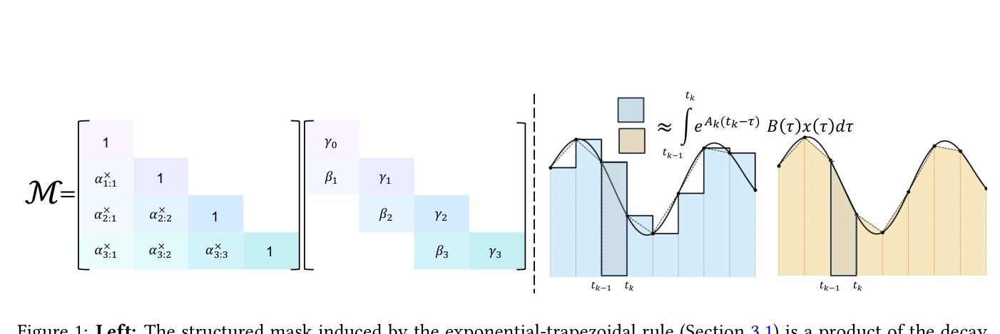
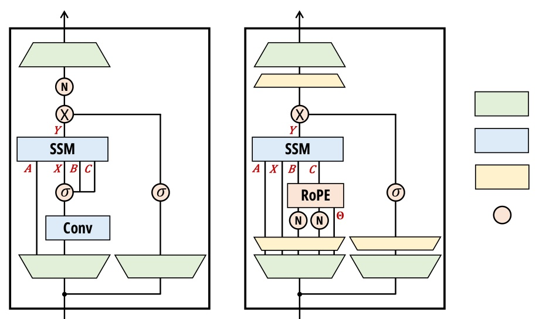
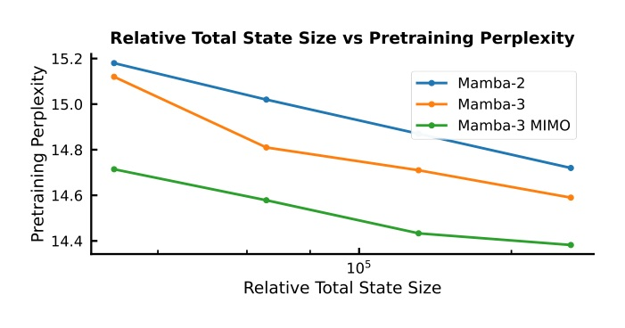

論文：Mamba-3: Improved Sequence Modeling using State Space Principles（arXiv 2603.15569v1，cs.LG）· 今日 arXiv API 429，改以 web search + iclr.cc 官方 oral 頁確認 venue；回溯選題
Mamba-3 在 Mamba-2 上做三個都來自 SSM 理論的改動：二階梯形離散化（隱含一個寬 2 的卷積，讓外部 short conv 變多餘）、複數狀態（數學上等於 data-dependent RoPE，Parity 從 0.90 拉到 100）、MIMO（decode 多做 R 倍 FLOPs 但延遲幾乎不變）。1.5B 下平均準確率 SISO 56.4、MIMO 57.6，勝 Transformer 55.4 與 GDN 55.8；用一半 state size 就達到 Mamba-2 的 perplexity。
| 改動 | 做法 | 解決什麼 |
|---|---|---|
| Exponential-trapezoidal 離散化 | 狀態輸入積分改用二階梯形法，λt 由資料決定 | 表達力；取代外部 short conv |
| Complex-valued SSM | 複數狀態轉移，用 RoPE trick 實作 | state tracking（parity、模運算） |
| MIMO | B、x、C 擴成 rank R，外積變 matmul | decode 算術強度與模型品質 |
| 方法 | αt | βt | γt | 用於 |
|---|---|---|---|---|
| Zero-Order Hold | exp(ΔA) | — | A−1(exp(ΔA) − I) | S4D, S5 |
| Trapezoidal（經典） | (I − ΔA/2)−1(I + ΔA/2) | — | (I − ΔA/2)−1Δ | S4 |
| Exponential-Euler | exp(ΔtAt) | — | Δt | Mamba-1, -2 |
| Exponential-Trapezoidal | exp(ΔtAt) | (1 − λt)Δt exp(ΔtAt) | λtΔt | Mamba-3 |

SISO（Table 2a）
MIMO（Table 2b）

| 模型（1.5B） | FW-Edu ppl ↓ | LAMB. acc ↑ | HellaS. ↑ | Arc-C ↑ | Avg ↑ |
|---|---|---|---|---|---|
| Transformer | 10.51 | 50.3 | 60.6 | 40.4 | 55.4 |
| Gated DeltaNet | 10.45 | 49.2 | 61.3 | 41.2 | 55.8 |
| Mamba-2 | 10.47 | 47.8 | 61.4 | 41.8 | 55.7 |
| Mamba-3 SISO | 10.35 | 49.4 | 61.9 | 42.7 | 56.4 |
| Mamba-3 MIMO (R=4) | 10.24 | 51.7 | 62.3 | 44.5 | 57.6 |

Table 5a · 440M，Chinchilla tokens，test ppl ↓
| 變體 | ppl |
|---|---|
| Mamba-3 − bias − trap | 16.68 |
| Mamba-3 − bias | 16.49 |
| Mamba-3 | 15.72 |
| Mamba-3 + conv | 15.85 |
| 模型 | Parity ↑ | Arith. w/o brackets ↑ | Arith. w/ brackets ↑ |
|---|---|---|---|
| Mamba-3 | 100.00 | 98.51 | 87.75 |
| Mamba-3（標準 RoPE） | 1.56 | 20.70 | 2.62 |
| Mamba-3（無 RoPE） | 2.27 | 1.49 | 0.72 |
| Mamba-2 | 0.90 | 47.81 | 0.88 |
| GDN [−1, 1] | 100.00 | 99.25 | 93.50 |
| 模型（1.5B） | SWDE | SQuAD | FDA | NIAH-S1 @4K | NIAH-S2 @4K |
|---|---|---|---|---|---|
| Transformer | 48.9 | 46.6 | 58.4 | 0.0 | 0.0 |
| GDN | 32.7 | 40.0 | 28.3 | 99.8 | 49.8 |
| Mamba-2 | 30.7 | 39.1 | 23.7 | 62.0 | 11.8 |
| Mamba-3 SISO | 28.5 | 40.1 | 23.4 | 88.2 | 50.6 |
| Mamba-3 MIMO | 36.3 | 41.7 | 29.3 | 93.0 | 40.4 |
| Hybrid M3 SISO + Norm* | 58.6 | 47.3 | 52.4 | 100.0 | 96.0 |
Table 6 · 單步 decode（ms），bs 128，H100，bf16
| 模型 | d=64 | d=128 |
|---|---|---|
| Mamba-2 | 0.127 | 0.203 |
| GDN | 0.176 | 0.257 |
| Mamba-3 SISO | 0.110 | 0.156 |
| Mamba-3 MIMO | 0.137 | 0.179 |
Table 7 · 16,384 tokens（秒）
| 模型 | Prefill | Prefill+Dec |
|---|---|---|
| vLLM Llama-3.2-1B | 12.17 | 976.50 |
| GDN | 16.21 | 145.87 |
| Mamba-2 | 16.22 | 149.02 |
| Mamba-3 SISO | 16.22 | 140.61 |
| Mamba-3 MIMO | 19.44 | 151.81 |
state-spaces/mamba 已釋出 Mamba-3 Triton / CuTe kernelThis derivation justifies the formulas used in Mamba-1/-2's implementation.
這個推導為 Mamba-1/-2 實作中的公式提供了理論根據（即 exponential-Euler）。§3.1.1, p.6
Our complex-valued update rule is equivalent to a data-dependent rotary embedding.
我們的複數狀態更新規則等價於 data-dependent 的旋轉位置編碼。§1, p.2
The MIMO recurrence is more expressive than the original SISO recurrence, computing R× more FLOPs while practically preserving the decoding speed.
MIMO recurrence 比原本的 SISO 更有表達力，多算 R 倍 FLOPs，decode 速度卻幾乎不變。§3.3, p.9
The bias and exponential-trapezoidal SSM synergize well and make the short convolution ... redundant.
bias 與 exponential-trapezoidal SSM 互相加乘，讓 short convolution 變得多餘。§4.2, p.13
| 項目 | 數值 | 出處 |
|---|---|---|
| 1.5B 平均準確率 Transformer / GDN / Mamba-2 / SISO / MIMO | 55.4 / 55.8 / 55.7 / 56.4 / 57.6 | Table 3 p.12 |
| 1.5B FW-Edu ppl（同上順序） | 10.51 / 10.45 / 10.47 / 10.35 / 10.24 | Table 3 p.12 |
| MIMO 對 Transformer / Mamba-2 / GDN（1.5B） | +2.2 / +1.9 / +1.8 pts | §1 p.2 |
| SISO vs MIMO decode 算術強度 | ≈2.5 vs Θ(R) ops/byte | Table 2 p.9 |
| MIMO decode FLOPs（固定 state） | 最多 4× Mamba-2 | §1 p.2 |
| 440M ppl：−bias −trap / −bias / full / +conv | 16.68 / 16.49 / 15.72 / 15.85 | Table 5a p.14 |
| Parity：Mamba-3 / Mamba-2 | 100.00 / 0.90 | Table 5b p.14 |
| decode 延遲 bf16 d=128：SISO / Mamba-2 | 0.156 / 0.203 ms | Table 6 p.15 |
| MIMO 1.5B MLP 寬度 | 4096 → 3824（−6.6%） | §4.1.1 p.13 |
來源：Mamba-3: Improved Sequence Modeling using State Space Principles · arXiv 2603.15569v1 · ICLR 2026 Oral · code: state-spaces/mamba